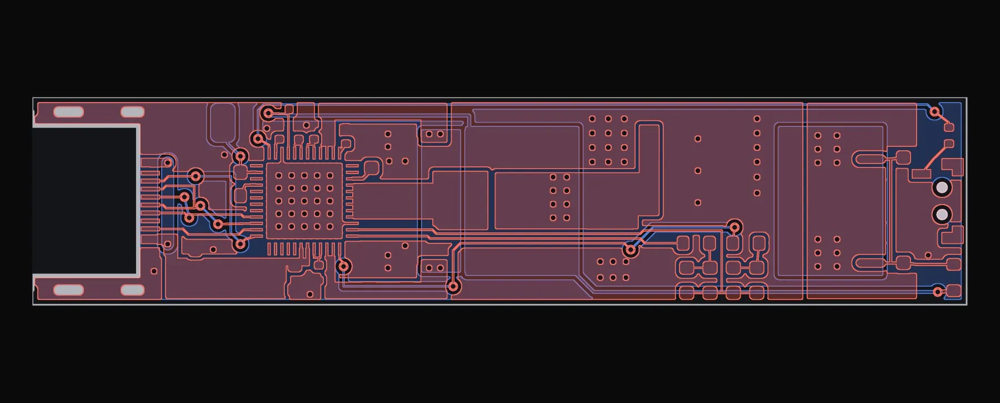
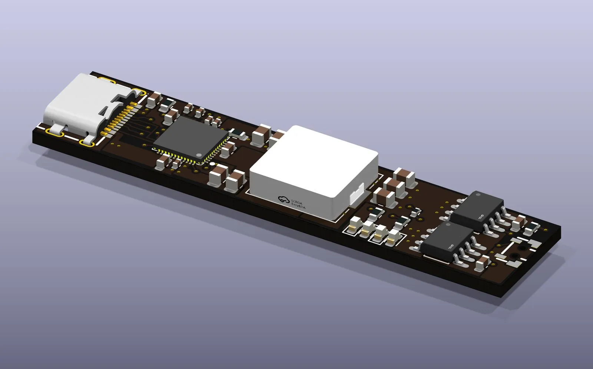
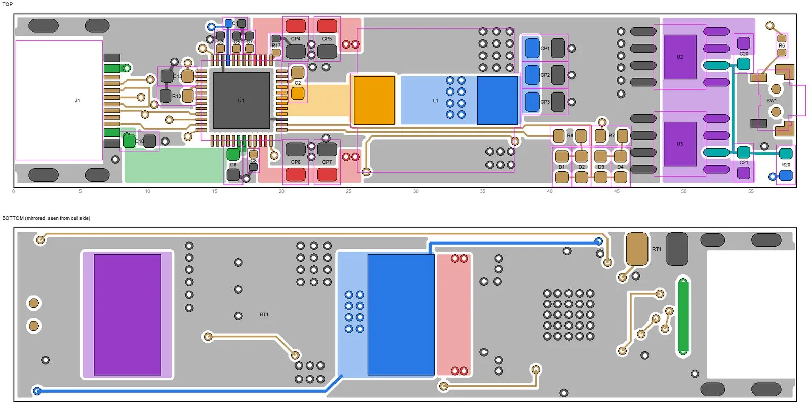
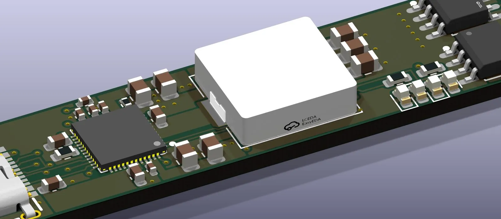

지금까지 보조배터리는 시판 충방전 모듈을 사서 만들었습니다. 이번에는 기판부터 직접 설계했습니다.21700 셀 1개로 USB-C PD 20W를 내는 보조배터리 기판입니다. 반복 작업은 Claude Code로 자동화했고, 부품 선정과 배치 기준, 검증은 직접 했습니다.
Claude Code 활용
2층 최종 기판 배선. 빨강: 윗면, 파랑: 아랫면
전압을 바꾸는 스위칭 전원 회로는 AI가 가장 자주 틀리는 부분입니다. 리튬 배터리를 다루는 기판은 실수 하나가 화재로 이어질 수 있습니다.
그래서 회로를 새로 그리지 않고, 보조배터리 전용 칩(IP5365)의 제조사 레퍼런스 회로를 그대로 따랐습니다. AI에게는 반복 작업만 맡겼습니다.
AI가 만든 결과는 그대로 믿지 않고, 확인하는 방법을 먼저 정해 두었습니다.
회로도부터 제작 파일까지 한 번에 만드는 스크립트를 짰습니다. 첫 기판(4층)은 설계 규칙 검사(DRC) 오류 0으로 완성했습니다.
기판을 58.4×13mm로 줄였습니다. 폭 13mm는 USB-C 단자가 들어가는 최소 폭입니다.
단가를 낮추려고 4층 대신 2층으로 처음부터 다시 그렸고, 회로를 검토한 뒤 JLCPCB에 주문했습니다.
시제품 생산이 끝났고, 실물 시험을 앞두고 있습니다.

1~2일차 4층 기판
2층 1차안은 자동 배선으로 만들었고, 검사 결과는 DRC 오류 0, 미연결 0이었습니다.
그런데 전류가 흐르는 길을 직접 따라가 보니, 커패시터의 GND 전류가 IC까지 약 40mm를 돌아가고 있었습니다. 전류가 돌아오는 길이 길수록 노이즈가 커집니다.
검사는 통과했지만 1차안을 버리고, 부품 배치부터 손으로 다시 했습니다.

2층 최종 배치. 위: 윗면, 아래: 아랫면
연결되어야 할 목록을 먼저 적어 두고, 완성된 기판과 핀 단위로 비교했습니다. 26개 연결(넷)이 모두 일치했습니다.
IP5365의 48핀을 데이터시트와 하나씩 대조했습니다. 그러다 충전 전압과 보호 IC의 차단 전압이 겹친다는 것을 찾았습니다. 그대로 두면 정상 충전 중에도 보호가 걸릴 수 있어 보호 IC를 바꿨습니다.
USB-C 단자, 버튼, 셀 연결 패드는 하우징과 맞아야 해서 위치를 먼저 고정했습니다. 나머지 부품은 남은 공간에 배치했습니다.
자동 배선 프로그램(Freerouting)은 GND 면을 끊어 놓고 USB 신호선도 잇지 못했습니다. 그래서 전부 손으로 배선했습니다.
100개와 500개는 JLCPCB에서 실제로 받은 견적입니다.
4,800개는 기판 16개를 한 판에 묶은 2×8 패널을 직접 만들어 견적을 냈습니다.
처음 견적 화면에는 $44,999가 나왔습니다. 확인해 보니 패널 한 장에 든 16개가 한 번 더 곱해진 값이었고, 바로잡으니 개당 약 $1.95였습니다.
| 수량 | 방식 | 개당 |
|---|---|---|
| 100개 | 단품, 실견적 | $3.52 |
| 500개 | 단품, 실견적 | $2.84 |
| 4,800개 | 2×8 패널, 실견적 + 보정 | 약 $1.95 |
2026년 11월 JLCPCB 견적 기준. 조립 포함. 배송·관세 별도. 4,800개는 SMT 조립비만 추정(개당 $0.17~0.26)이라 개당 $1.90~2.00 범위의 중간값입니다. 원가의 36%는 IP5365 칩 하나입니다.

시제품으로 충전과 방전, 발열, 끝까지 충전되는지를 확인할 예정입니다.다음 기판은 3S 45W 보조배터리입니다.